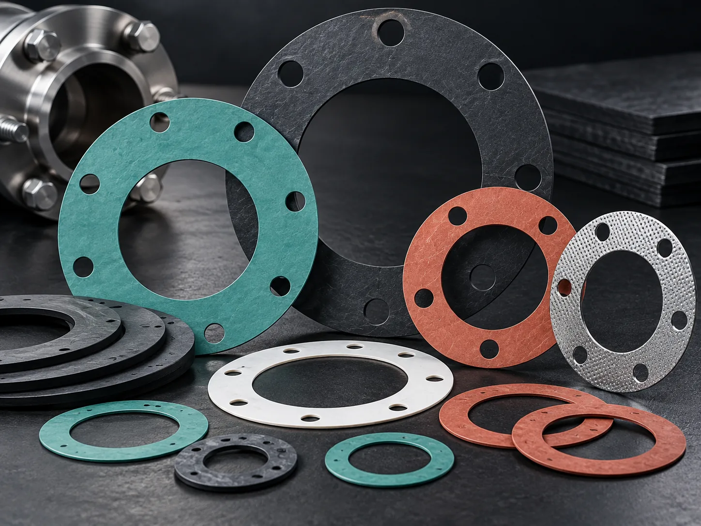
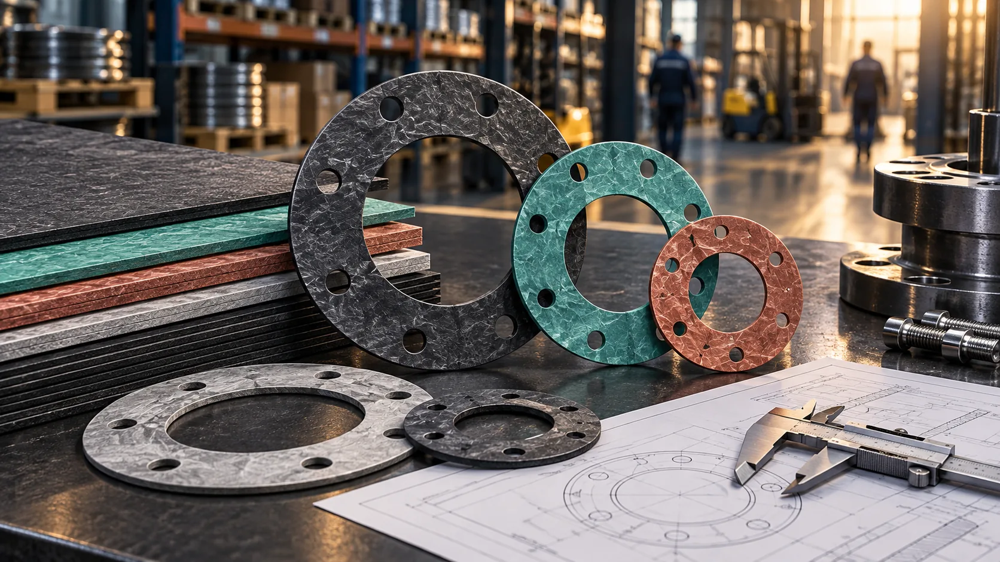
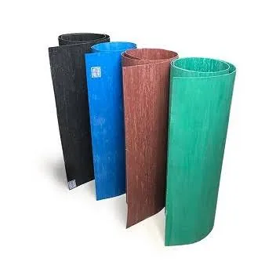
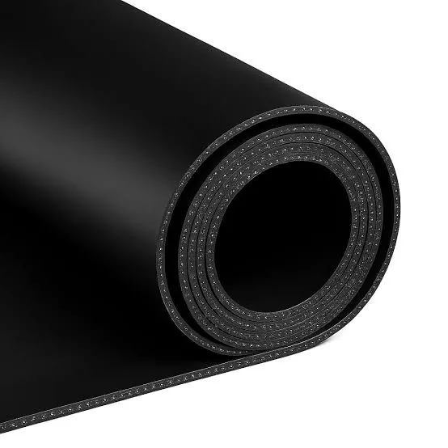
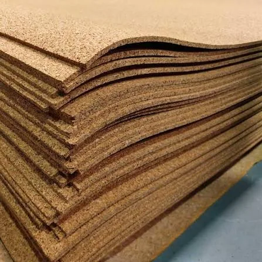
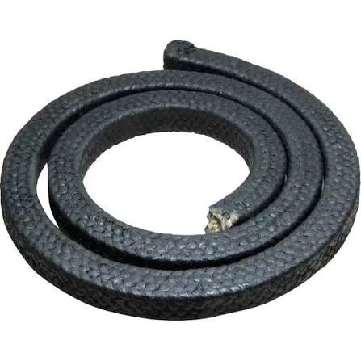

Flange Gaskets
Flat ring, full-face and custom flange gaskets supplied from confirmed dimensions, drawings or samples.
View product →Wholesale industrial sealing materials and custom-cut flange gaskets for procurement, maintenance and engineering teams. Send a drawing, dimensions, photograph or physical sample for technical review.

A focused catalogue for industrial buyers. Each product has its own page with supply form, quotation inputs and application guidance.

Flat ring, full-face and custom flange gaskets supplied from confirmed dimensions, drawings or samples.
View product →
Compressed-fibre jointing sheet supply for industrial sealing and gasket fabrication requirements.
View product →
Industrial SBR rubber sheet supply for appropriate general-purpose sealing, lining and fabrication requirements.
View product →
Rubberised cork sheets for suitable sealing, insulation and vibration-control applications.
View product →
Braided packing for pumps, valves and rotating equipment, matched to the equipment and service conditions.
View product →
Industrial woven sealing rope and tape supplied to confirmed size, construction and application requirements.
View product →
A separate technical-sales path for replacement gaskets, shutdown jobs and custom profiles. Send what you have; we will identify the missing information needed to quote.
Practical resources help buyers send the right dimensions and application information the first time.
Visual guidance for circular, full-face and rectangular gasket measurements.
Open measurement guide →See the dimensions, material details, application data and attachments that improve quotation accuracy.
View RFQ checklist →Send PDF, JPG, JPEG or PNG drawings and product photographs directly with your enquiry.
Start technical RFQ →ALL TOPSEAL is the trading identity of Emma Onyeco Investment Company Limited, supporting industrial buyers with wholesale sealing materials, technical gasket enquiries and custom fabrication requirements from Lagos.
Send your dimensions, drawing, material requirement, quantity, application and delivery location. Formal orders should be sent to mbuchi619@gmail.com.